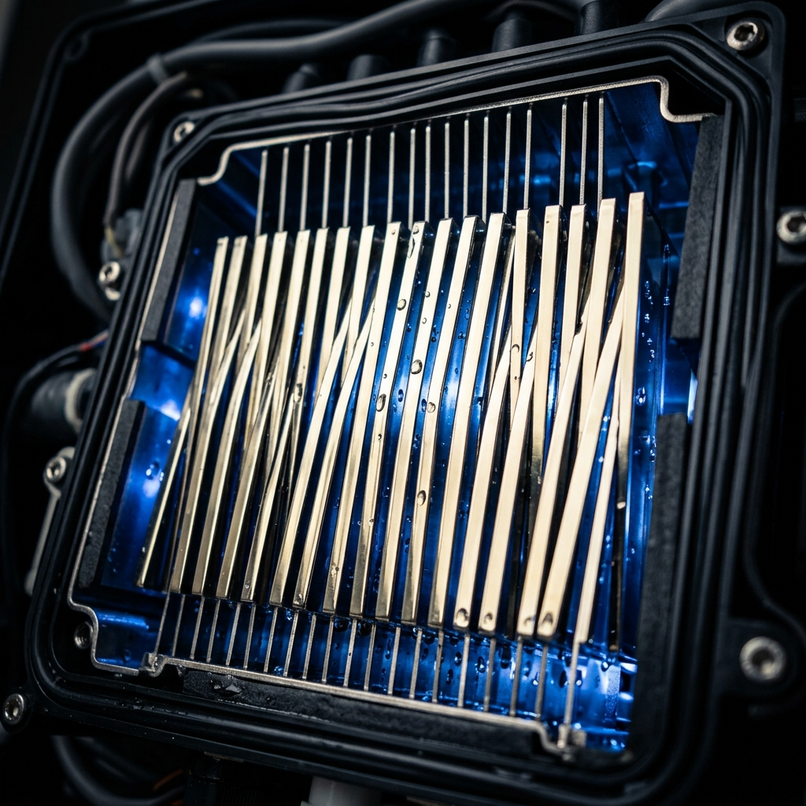
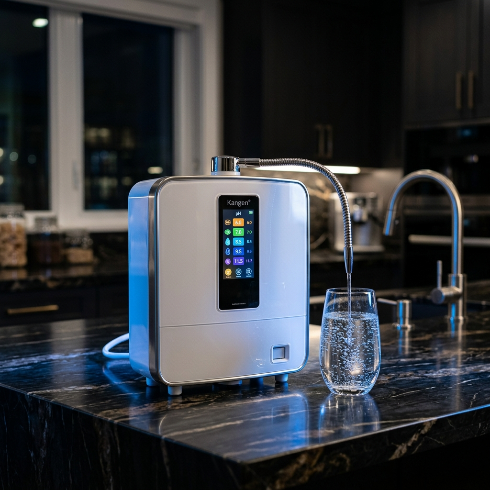

No compras un electrodoméstico. Adquieres un sistema médico certificado ISO 13485 que protegerá la salud de tu familia durante los próximos 15-25 años. Fabricado en Japón con placas sólidas de titanio recubiertas de platino.

Esta es la diferencia fundamental entre un ionizador Kangen y cualquier imitación barata. Las placas de electrólisis Enagic son bloques sólidos de titanio de grado médico, recubiertos con platino puro mediante un proceso de inmersión (dip coating) que garantiza uniformidad perfecta.
Los competidores baratos usan "placas de malla" (rejilla de alambre recubierta), que ofrecen menor superficie de contacto, electrólisis desigual, degradación prematura y producción inconsistente de hidrógeno molecular. Es como comparar un bisturí quirúrgico con un cuchillo de cocina.
El ionizador más avanzado y potente para el hogar. 8 placas de titanio-platino, la electrólisis más potente y la producción de H₂ más alta de la gama.

★ RecomendadoCon 8 placas sólidas de titanio-platino, el K8 es el ionizador más potente de la gama para uso residencial. Produce un flujo de agua más consistente, un ORP más profundamente negativo y una concentración de hidrógeno molecular más alta que cualquier otro modelo.
Su pantalla LCD a color en tiempo real muestra el pH exacto, el flujo de agua y las indicaciones de mantenimiento. El sistema de voz multilíngue confirma cada selección de pH. Tecnología intuitiva al servicio de tu salud.
Cada modelo está fabricado con los mismos estándares de calidad ISO 13485 y las mismas placas sólidas de titanio-platino. La diferencia está en la potencia y las prestaciones.
Con más de 30 años en el mercado, el SD501 es el ionizador más vendido de la historia. 7 placas sólidas de titanio-platino, pantalla LCD, sistema de voz y producción completa de los 5 tipos de agua. Un clásico probado en millones de hogares en todo el mundo.
La misma cámara de electrólisis del SD501 clásico envuelta en un acabado platinium de alta gama. Para quienes buscan que su ionizador se integre con el diseño de cocinas de lujo. Mismo rendimiento, estética superior.
Diseñado para clínicas, restaurantes, spas y oficinas. Con 12 placas y doble cámara de electrólisis, produce agua a mayor volumen y velocidad manteniendo un ORP y concentración de H₂ óptimos. La bestia del catálogo Enagic.
El modelo de entrada para personas individuales o parejas. Con 3 placas, produce agua alcalina pH 8.5-9.5 y agua ácida pH 6.0. Compacto, eficiente y el primer paso perfecto para experimentar la diferencia Kangen.
El Anespa DX transforma tu ducha en una experiencia de spa con aguas termales. Filtra el cloro, los metales pesados y las impurezas del agua de red, y la enriquece con minerales naturales (calcio, magnesio, sodio) para crear una ducha que hidrata tu piel en lugar de resecarla.
El resultado: piel más suave, cabello más brillante, menos irritación, menos sequedad. Es la diferencia que sientes desde la primera ducha.
Nadie cuestiona el precio de un buen colchón donde duermes 8 horas al día. ¿Por qué cuestionarías invertir en el agua que constituye el 70% de tu cuerpo?
El coste real de un ionizador Kangen, amortizado en sus 15-25 años de vida útil, es inferior a lo que pagas por un café al día. Pero en lugar de un café, le das a tu familia agua antioxidante, alcalina, hidrogenada ilimitada, además de desinfectante, tónico facial, acondicionador capilar y desengrasante natural. Todo incluido. Para siempre.
Ponemos en perspectiva lo que consideramos "normal" gastar
Cada día que pasa bebiendo agua muerta, acidificada, clorada y sin antioxidantes es un día que tu cuerpo trabaja contra corriente. Cada día que tus hijos beben agua de plástico con microplásticos es un día que podrías evitar. La tecnología existe. La ciencia lo respalda. Los hospitales japoneses la usan desde los años 80. ¿A qué esperas?